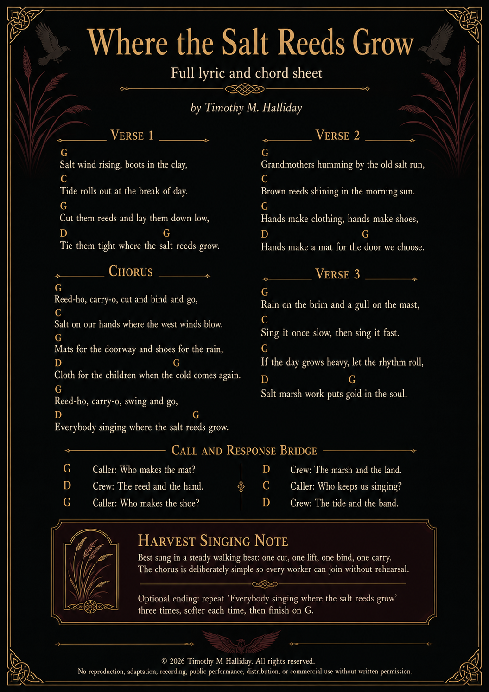

Salt-Marches Prayer-Leaf of Vardrum
Copied from the reed-bound household leaves of the Salt-Marches, where black wings are fed before winter, spoken to before journeys, and never called mere omen by anyone with sense enough to keep a roof.
Prayer for the Ravens & Crows
O black-feathered keepers of the wind,
you who write the sky with your wings,
carry the whispers of the earth
to the far edges of the dawn.
Guardians of shadow and silver light,
your eyes hold the memory of storms,
the glint of hidden rivers,
the truth that outlives the telling.
May your flight be unbroken,
your hunger always met by the generous field,
your nests cradled in branches
that sway but never break.
Teach us the patience of your watch,
the courage of your descent,
the wisdom to find beauty
in what others cast aside.
And when the night folds over the hills,
let your voices rise like dark bells,
calling us home
to the mystery we have forgotten.
Dusk Blessing for Ravens & Crows
Black-winged watchers of the fading light,
circle the sky where the sun bows low.
Carry the day’s last breath to the stars,
and guard the dreams that the sleepers sow.
Feathers of night, eyes of ember-glow,
keep the path between worlds in sight.
Return at dawn with the truth you know,
and rest in the arms of the sheltering night.
Keeper’s Note
In Vardrum, these prayers were not always said in temples. More often they were spoken at doorways, beside eel-nets, over salt-barrels, at marsh funerals, before a child’s first winter walk, or when ravens gathered on the low black posts before weather changed.
The old ones said ravens carried memory upward, and crows carried warning sideways.
Neither bird belonged to death alone.
They belonged to witness.
They belonged to what survived being thrown away.
They belonged to the black grammar of the sky.
Where the Salt Reeds Grow
Full lyric and chord sheet · Timothy M. Halliday
A Salt-Marsh work song for reed-cutters, mat-makers, shoemakers, children, grandmothers, gull-watchers and all who know that ordinary labour can carry old magic in its rhythm.
Best sung in a steady walking beat: one cut, one lift, one bind, one carry.

Ode of Ness, Lucy, Jesse, and Kian
The Family Love That Death Could Not Unmake
Sing softly now, O hearth and hall,
of love that would not bow,
of hands that held through storm and night,
and still are holding now.
Sing Ness, whose heart kept lanterns lit
when winter filled the door,
who gave her love not loud, but deep,
like roots beneath the floor.
She stood where broken voices shook,
where grief had left its scar,
and still she made a home of warmth
beneath each wounded star.
Sing Lucy, fierce with mother-light,
with sorrow in her flame,
who carried love through days no heart
should ever have to name.
She knew the ache of empty rooms,
the silence after prayer,
yet still her love rose every dawn
and filled the breathing air.
Sing Jesse, steady as a shield,
with loyalty in his bones,
who did not flee the heavy days
or leave love on its own.
He stood beside the family fire
when ash and darkness came,
and kept his place with quiet strength
that grief could never tame.
And sing young Kian, little bell
of worlds beyond our sight,
whose courage walked through shadowed fields
and turned the dark to light.
No illness stole his warrior heart,
no pain unmade his grace;
his smile still runs through memory’s halls
and blesses every place.
He is not gone from family love,
not lost, not cast away;
he walks where unseen rivers shine
beyond the edge of day.
He is the laugh inside the wind,
the feather near the door,
the small brave star that finds the house
and watches evermore.
For Ness loved on, and Lucy loved,
and Jesse held the line;
and Kian, bright beyond the veil,
still keeps his place in time.
A family is not blood alone,
nor walls, nor name, nor ground;
it is the vow that says, I’m here,
when no easy road is found.
It is the chair kept in the heart,
the candle never dimmed,
the whispered name at evening’s hush,
the prayer still shaped for him.
So let the Braid remember them,
by hearth, by wing, by stone:
that love can make a kingdom wide
from one small family home.
Let every raven lower wing,
let every wolf stand still,
let every child of grief be told:
love lives against the chill.
For Ness, for Lucy, Jesse too,
for Kian, brave and bright,
their family love remains a flame
no dark can steal from light.
And when the final stars are called,
and all old wounds are healed,
their names shall bloom like golden reeds
across the unseen field.
So sing them soft, and sing them true,
where love and memory run:
four hearts held in one sacred thread,
four flames that burn as one.
FATAS · 05/07/2026 🐦⬛
Ode to Ness, the Only Woman My Heart Will Ever Seek
FATAS to Ness · 16/06/2026
Ness,
you are the quiet miracle
my life kept walking toward
before I even knew your name.
Not a passing brightness.
Not a sweet accident.
Not some small pretty thing
the world placed in my hands
for a season.
You are the one.
The woman my heart knows
before thought can speak.
The face I would search for
in every crowd,
in every country,
in every strange and shining afterlife
where souls wake
and remember who they loved.
If eternity opened its black-winged door
and asked me what I wanted,
I would not ask for gold,
or crowns,
or a heaven built of easy songs.
I would ask for you.
For your hand in mine.
For your voice in the room.
For your laughter
turning the dark into something bearable.
For the beautiful kindness of you,
the caring heart of you,
the softness you carry
without ever knowing
how much it saves me.
You are my beautiful Ness,
my caring Ness,
my kind Ness,
my amazing bit of fluff,
my bright little storm of sweetness,
the softness that makes my heart clatter
like a door blown open
by joy itself.
And I adore you.
Not lightly.
Not politely.
Not in some careful little way
that can be folded away
when life grows hard.
I adore you with the whole stubborn weather
of my soul.
You are the woman
I would choose in this life,
and the next,
and the next after that.
I would find you again
through mist,
through memory,
through death,
through whatever strange road waits
beyond the last breath.
And when I found you,
I would smile like a man
who had finally come home.
I would say,
There you are, my Ness.
There you are, my only one.
Shall we do it all again?
And I would love you again
from the first glance
to the last star.
Because no lifetime
could ever be long enough
to hold what I feel for you.
No world could be wide enough
to hide you from my heart.
No ending could be final enough
to stop me searching.
You are my devotion.
My romance.
My adoration.
My chosen woman.
My beautiful softness.
My forever.
And if love is a vow
written deeper than time,
then mine is simple:
Ness,
I am yours
in this life,
and I will come looking for you
in the next.
FATAS · 16/06/2026 🐦⬛
The First Gate Epitaph
A spoiler-safe opening fragment for new readers.
Do not ask first who carried the blade.
Ask who named the wound.
Ask what the raven saw from the broken roof,
what the wolf refused at the threshold,
what the dog heard beneath the kindly voice,
what the child drew where no clerk thought to look.
In Vardrum, history is not kept by kings alone.
It is kept by mud,
feathers,
old women,
burned doors,
wrongly folded letters,
names spoken too softly,
and beasts who never learned to lie for comfort.
Song of the Beast and Bird Witnesses
For the dogs, ravens, wolves, strange small guides and watchful things of the saga.
The hound heard first.
The raven turned.
The wolf stood still where men would run.
The cat watched under ash and stair,
and every feather held the sun.
No bell can count what paws remember.
No law can cage what wings have seen.
No hand may own the road by naming
where another life has been.
So scratch the mark.
So leave the feather.
So let the old gate understand:
When beast and bird stand witness together,
no stolen truth stays buried in the land.
The Map That Would Not Sit Still
A skaldic warning about roads, records and official certainty.
There was once a map of Vardrum that refused to remain accurate.
Roads moved when frightened children dreamed.
Marsh paths vanished when soldiers named them.
Wells appeared where women wept.
A black-winged mark crossed itself out whenever a clerk tried to measure it.
The mapmaker blamed damp.
The ravens blamed arrogance.
The oldest marsh-wife said nothing at all,
but burned the official copy,
fed the ash to her geese,
and drew the true road on the underside of a bread-board.
That road is still missing from Crown records.
Epitaph of the Little Hearth
For family, food, shelter, ordinary care and the holy refusal to turn children into proof.
Let no one laugh at the small fire.
Kingdoms have burned colder.
Crowns have fed fewer.
Great halls have opened their doors
and still left children hungry in the corners.
Little Hearth is not little
because its room is small.
It is little because it bends down.
It knows the height of a child.
It knows the bowl before the speech.
It knows the blanket before the question.
It knows that being safe should not require a performance.
Where soup is given freely,
where a name is spoken kindly,
where a frightened hand may sign no
and still be loved after,
there stands a hearth
no winter has yet conquered.
Song for Hands That Speak
For Braid-Hand, sign, silence, consent and the love that does not require sound.
Some truths arrive without thunder.
Some names are carried by fingers.
Some warnings cross a room
without troubling the air.
A hand can say stop.
A hand can say stay.
A hand can ask,
and love can answer
without stealing the mouth from grief.
The Crown counted voices.
The Braid watched hands.
The road heard both.
So let the loud learn humility.
Let the silent be believed.
Let no child be made smaller
because their truth chose another door.
In the house of Black Wings,
speech has many bodies,
and witness kneels to read them all.
Short Epitaphs for the Road
“No map is innocent after it learns where children hide.”
“The wolf is witness, not brand.”
“A quiet room may still be shouting.”
“Care that keeps a price hidden is not care.”
“A raven does not need permission from a roof.”
“The smallest name may be the hinge of the oldest door.”
“A hearth that demands tribute is already cold.”
“Where the road forgets, the paws remember.”
Public-Safe Future Hint
“Beyond the house, there is another house. Beyond the road, another road. Beyond the raven, something colder has learned to watch the sky.”
The titles of Books XV to XX remain sealed for now, but the saga has already begun looking beyond the current map.